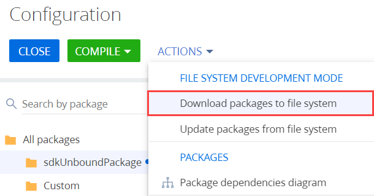
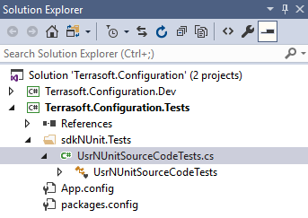
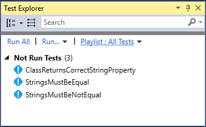
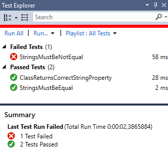

1. Установить адаптер NUnit для Visual Studio
Установить адаптер NUnit как расширение Visual Studio
Способ 1:
- Скачайте расширение из Visual Studio Marketplace.
- Двойным кликом по *.vsix-файлу запустите установку.
- Во время установки выберите необходимые версии Visual Studio.
Способ 2:
- В Visual Studio нажмите Tools —> Extensions and Updates.
- Выберите фильтр Online (1).
- В строке поиска укажите "NUnit 3 Test Adapter" (2).
- В результатах поиска выберите расширение NUnit 3 Test Adapter (3).
- Для установки расширения нажмите кнопку Download.
Установить адаптер NUnit как пакет NuGet
- Кликните правой кнопкой мыши по названию проекта тестов (например, Terrasoft.Configuration.Tests.csproj) и выберите Manage NuGet Packages....
- В строке поиска укажите "NUnit3TestAdapter" (1).
- В результатах поиска выберите пакет NUnit 3 Test Adapter (2).
-
Для установки пакета нажмите кнопку Install (3).
Установка пакета NuGet подробно описана в официальной документации Microsoft.
2. Выгрузить пакет в файловую систему
Создание Unit-тестов для .NET классов, реализованных в пакетах Creatio, возможно только в режиме разработки в файловой системе.
В нашем примере используется пользовательский пакет sdkNUnit.
Чтобы выгрузить пакет в файловую систему:
- Настройте Creatio для работы в файловой системе. Настройка описана в статье Внешние IDE.
- На панели инструментов в группе действий Разработка в файловой системе (File system development mode) выберите Выгрузить все пакеты в файловую систему (Download packages to file system).

В результате все пакеты будут выгружены по пути ..\Terrasoft.WebApp\Terrasoft.Configuration\Pkg в каталог с соответствующим названием пакета. Пакет sdkNUnit содержит схему типа Исходный код (Source code) UsrNUnitSourceCode.
В исходном коде схемы UsrNUnitSourceCode реализован класс UsrNUnitSourceCode, содержащий методы, для которых необходимо написать тесты.
3. Настроить проект Unit-тестов
В нашем примере для создания Unit-тестов используется предварительно настроенный проект Terrasoft.Configuration.Tests.csproj, поставляемый вместе с решением Terrasoft.Configuration.sln.
Чтобы использовать в проекте Terrasoft.Configuration.Tests.csproj фреймворк NUnit для создания тестов, необходимо добавить NuGet-пакет NUnit в зависимости проекта. Для этого:
- В Solution Explore кликните правой кнопкой мыши по названию проекта тестов Terrasoft.Configuration.Tests.
- Выберите команду Manage NuGet Packages....
- В строке поиска укажите "NUnit" (1).
- В результатах поиска выберите пакет NUnit (2).
- Для установки пакета нажмите кнопку Install (3).
4. Создать тесты
Имя содержащего тесты класса должно состоять из имени тестируемого класса с добавлением окончания "Tests". Также для группировки тестов в проекте удобно помещать их в каталог, название которого совпадает с названием тестируемого пакета с добавлением окончания ".Tests".
Чтобы создать тесты:
- В проекте Terrasoft.Configuration.Tests.csproj создайте каталог sdkNUnit.Tests.
- В каталоге sdkNUnit.Tests создайте новый класс UsrNUnitSourceCodeTests. Исходный код этого класса будет сохранен в файле UsrNUnitSourceCodeTests.cs.

- В класс UsrNUnitSourceCodeTests добавьте методы, реализующие тесты.
Атрибут [TestFixture] показывает, что класс UsrNUnitSourceCodeTests содержит тесты. Для каждого метода, тестирующего определенную функциональность этого класса, необходимо добавить атрибут [Test]. Атрибуты фреймворка NUnit описаны в документации NUnit.
Тестирование выполняется с помощью метода Assert.That(), который принимает тестируемое значение. В качестве аргументов использутся объекты, ограничивающие тестируемое значение. Модель ограничений описана в документации NUNit.
5. Выполнить тестирование
- В Visual Studio нажмите Test —> Windows —> Test Explorer.

- Для запуска тестов выполните команду Run All. Успешно пройденные тесты будут перемещены в группу Passed Test, а непройденные тесты — в группу Failed Test.

Функциональность окна Test Explorer описана в документации Visual Studio.